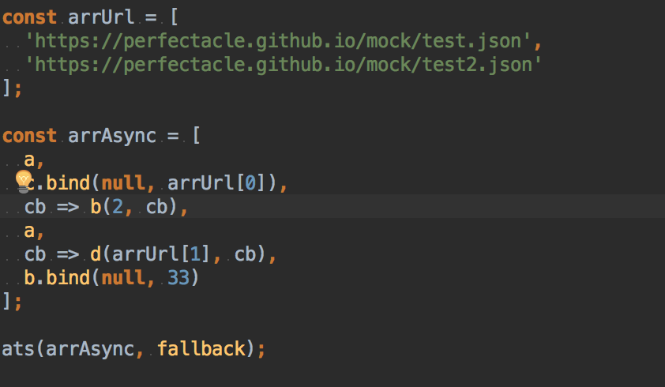

async-to-sync
async-to-sync는 자바스크립트 비동기 함수를 동기 함수로 바꿔주는 헬퍼 함수이다.
async/await는 물론 Promise를 몰라도 된다!!
왜 async-to-sync를 만들었는가?
드디어 async/await가 ES2017에 추가 되었다(아직 최종 스펙이 나온 건 아니지만).
async/await는 자바스크립트 비동기 함수를 동기 함수로 바꿔주는 기능을 한다.
하지만 여전히 사용하기가 어렵고, 또한 ES2015의 Promise를 알고 있다는 전제 하에 사용이 가능하다.
그래서 비동기 함수를 동기 함수로 만들 때 사용하기 편하려고 만들었다.
시작하기
설치
npm
|
|
yarn
|
|
사용법
만약 타겟 브라우저/노드의 async/await 및 Promise 지원 여부를 모른다면 아래 링크를 확인하자.
ECMAScript 6 compatibility table | Promise
Node.js ES2015/ES6 | Promise
ECMAScript 2016+ compatibility table | async
Node.js ES2017 support | async주의!
async-to-sync는 babel-polyfill을 포함하지 않았다.
따라서 babel-polyfill을 사용해야한다면 설치를 하자.npm
yarn
혹은 CDN을 이용하면 된다.
아래 구구절절한 사용 방법 대신 빠르게 사용 방법을 익히고 싶다면 examples를 참조하자.
async-to-sync 모듈을 불러오는 방법
웹팩
async/await & Promise 지원 브라우저인 경우
|
|
async/await & Promise or ES2015 미지원 브라우저인 경우
babel-polyfill 사용이 필수이다.
또한 async-to-sync 모듈을 불러오기 전에 babel-polyfill을 불러와야만 한다.
만약 바벨과 같은 트랜스파일러를 쓰지 않는다면, ES2015 문법 사용은 지양하자. (MS 진영은 암담하기에…)
브라우저 (CDN은 지원 예정이니 잠시만 기다리자!)
async/await & Promise 지원 브라우저
|
|
async/await & Promise or ES2015 미지원 브라우저
babel-polyfill 사용이 필수이다.
또한 async-to-sync 모듈을 불러오기 전에 babel-polyfill을 불러와야만 한다.
만약 바벨과 같은 트랜스파일러를 쓰지 않는다면, ES2015 문법 사용은 지양하자. (MS 진영은 암담하기에…)
Node.js
async/await & Promise를 지원할 때
만약 import 문법을 쓰고 싶다면 바벨과 같은 트랜스파일러를 이용하자.
In async/await & Promise or ES2015 not support Node
babel-polyfill 사용이 필수이다.
또한 async-to-sync 모듈을 불러오기 전에 babel-polyfill을 불러와야만 한다.
만약 import 문법을 쓰고 싶다면 바벨과 같은 트랜스파일러를 이용하자.
어떻게 쓰는가
비동기 함수에는 몇 가지 종류가 있다.
setTimeout(or setInterval)
1234567891011var a = function() {setTimeout(function() {console.log(123);}, 2000);};var b = function(b) {setTimeout(function() {console.log(b);}, 1000);};AJAX(Asynchronous Javascript And XML)
bluebird, axios, jQuery slim과 같은 써드 파티들을 사용해도 된다.
XHR(XMLHttpRequest)이나 fetch를 쓸 때는 Promise를 써야한다.
then 메소드는 성공 콜백 함수와 같고, catch 메소드는 실패 콜백 함수와 같다.주의!
몇몇 AJAX 요청은 IE9에서 문제가 되지만 이것은 async-to-sync의 문제가 아니다.
아래 링크를 참조하자.- Can I Use Cross-Origin Resource Sharing?
- IE9 jQuery AJAX with CORS returns “Access is denied” 12345678910111213141516171819202122232425262728293031323334353637383940414243444546474849var fallback = function(e) {alert('Error: ' + e);};var xhr = function(url, method) {method = method || 'get';return new Promise(function(res, rej) {var xhr = new XMLHttpRequest();xhr.open(method, url, true);xhr.responseType = "json";xhr.onreadystatechange = function() {if(xhr.readyState === 4) { // 4 means request is done.if(xhr.status === 200) { // 200 means status is successfulres(xhr.response);} else {rej(xhr.status);}}};xhr.send();});};var _fetch = function(url, method, headers, body) {method = method || 'get';headers = headers || null;body = body || null;return fetch(url, {method, headers, body}).then(function(res) {return res.json({});});};var c = function(url) {xhr(url).then(function(data) {console.log(data);}).catch(function(e) {fallback(e)});};var d = function(url) {_fetch(url).then(function(data) {console.log(data);}).catch(function(e) {fallback(e)});};
주의!
다음의 규칙들을 따라서 함수를 재작성하자.
- 함수의 파라미터에 콜백 함수를 추가해주자.
- 비동기 함수 맨 마지막에 콜백 함수를 실행해주자. 12345678910111213141516171819202122232425262728293031323334// 모든 비동기 함수마다 콜백 함수를 파라미터로 추가해줘야한다.var a = function(cb) {setTimeout(function() {console.log(123);// 비동기 함수의 맨 마지막에는 콜백 함수를 반드시 실행해줘야한다.cb();}, 2000);};// 콜백 함수는 파라미터 제일 끝 부분에 추가해주자.var b = function(b, cb) {setTimeout(function() {console.log(b);cb();}, 1000);};var c = function(url, cb) {xhr(url).then(function(data) {console.log(data);cb();}).catch(function(e) {fallback(e)});};var d = function(url, cb) {_fetch(url).then(function(data) {console.log(data);cb();}).catch(function(e) {fallback(e)});};
진짜 사용 방법
ats(Array arrAsync[, Function fallback])
- arrAsync의 타입은 배열이다.
이 배열은 비동기 함수들을 포함하고 있다.
이 함수들은 동기적으로 실행될 것이다. - fallback의 타입은 함수이며, 필수 사항이 아니다.
이 함수는 에러 발생시 실행되며, 그 이후에 실행될 함수들의 실행을 모두 멈춰버린다.123456789101112131415161718var arrUrl = ['https://perfectacle.github.io/mock/test.json','https://perfectacle.github.io/mock/test2.json'];var arrAsync = [a,// 인자를 넘겨주거나 this 값을 바인딩해야할 경우 bind 메소드를 사용하면 된다.c.bind(null, arrUrl[0]),// 물론 인자를 넘길 때 ES2015의 arrow function을 사용해도 된다.// 하지만 이 때는 콜백 함수까지 같이 매개변수 및 인자로 넘겨줘야한다.cb => b(2, cb),a,cb => d(arrUrl[1], cb),b.bind(null, 33)];ats(arrAsync, fallback);
지원하는 플랫폼
 |
||||
|---|---|---|---|---|
| Latest ✔ | Latest ✔ | 9+ ✔ | 6+ ✔ |